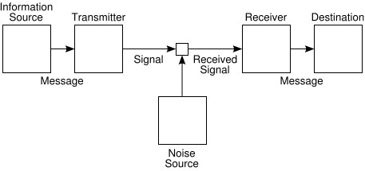
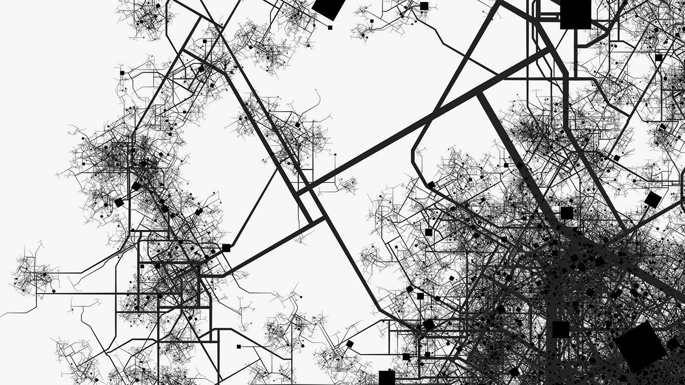

Данные¶
86. Большие данные¶
КЛЮЧЕВЫЕ ВОПРОСЫ
Что Facebook и Вконтакте знают о вас?
Являются ли большие данные только подсчетами?
Могут ли большие данные быть умными?
ПОЧЕМУ ЭТО ВАЖНО
Анализ данных, будь то большие или малые данные, действительно касается подсчета. Как правило, «большие данные» могут включать подсчет слов или кликов на веб-странице. Но что делает «большие данные» исчисляемыми? Что, собственно, мы считаем? Когда один клик совпадает с другим?
Подсчеты, которые Facebook и другие компании в социальных сетях делают, кажутся довольно эффективными. Они способены предсказать социальный статус и экономические ценности отдельных пользователей, он может предсказать, как они могут голосовать, и он может ориентировать их на рекламу, соответствующую их профилю.
Google translate делает замечательную работу по преобразованию одного языка в другой путем простого подсчета слов.
Программное обеспечение для анализа текста, на которое полагается Google, работает, подсчитывая отдельные слова и группы слов. Например, bigram - это группа из двух смежных слов («кошка», «кошка сидела», «сидела»), и в равной степени мы можем считать триграммы с тремя словами.
Однако это может зайти слишком далеко, чтобы сказать, что результат интеллекта - это подсчет. Счетчик устраняет неопределенности в отношении вещей и представляет резюме человека или перевод, который может быть или не быть правильным. Однако такие краткие описания никогда не бывают полными: в любом процессе подсчета, то, что не считается, обычно является самым важным.
87. Что такое подсчет?¶
КЛЮЧЕВЫЕ ВОПРОСЫ
Какие предметы похожи друг на друга, как две капли воды?
Можем ли мы представить подсчет чего-либо вне времени?
Подсчет это только социальное соглашение?
ПОЧЕМУ ЭТО ВАЖНО
Идея количественного определения чего-либо проблематична, и для количественной оценки необходимо провести ключевое различие в отношении того, что значит «одно понятие» и что значит другое. Все величины являются, на некотором уровне, отношениями.
Бейтсон утверждает: «В принципе невозможно объяснить любой образ, обращаясь лишь к одной величине. Но обратите внимание, что соотношение между двумя величинами уже является началом какого-либо образа. В других словах количество и узор имеют различный логический тип и не могут легко сочетаться в одном и том же мышлении». (Bateson 1987)
Подсчет - это определение и агрегация вещей, которые похожи друг на друга (аналогии), а также неожиданные ситуации - или аномалии. Аналогии не определяются без аномалий. Принципиально существует различие.
Эти различия должны быть согласованы - по крайней мере, между учеными. Если бы ученые не согласились с тем, что они подсчитывали, то последовательный научный дискурс был бы невозможным.
Всякий раз, когда вы видите аналитический отчет, вы всегда должны спрашивать: «Что подсчитывается?», «Что считается одним и тем же?», «Что считается другим?»
Согласование аналогов и аномалий - это разговор ученых. Без реального воплощения участия в явлениях, которые порождают аналогии и аномалии, нет способа координировать разговор. Без какого-либо способа координирования разговора во всем процессе анализа данных есть мистицизм.
Данные риски становятся своего рода религией, отделенной от науки. Образование, основанное на данных, таким образом, также отделено от науки. В конечном итоге мы оказываемся в худшем случае: образовательная система, отказывающаяся от гуманитарных наук и искусств, потому что они ненаучны, охватывая науку, которая находится в ранге ненадежного анализа данных!
88. Отправители и получатели¶
КЛЮЧЕВЫЕ ВОПРОСЫ
Что должен сделать отправитель, когда посылает сообщение, чтобы оно было правильно принято?
Как можно преодолеть «шум» канала связи?
ПОЧЕМУ ЭТО ВАЖНО
Представьте, что вы пытаетесь связаться с кем-то в шумной комнате, где есть расстояние между вами и другим человеком. Что вы сделаете? Будете кричать? Махать руками? Напишите сообщение? Может быть, вы попробуете всевозможные варианты. То, что вы делаете это попытка сказать что-то разными способами. Это усиление.
Шеннон нарисовал диаграмму, указывающую на основное препятствие коммуникации – необходимое усиление.
Для Шеннона усиление требует добавления «избыточности». Резервирование может означать добавление дополнительных бит в сообщение, чтобы гарантировать, что различия в энтропии между символами будут все еще очевидны, даже если передача будет ухудшена. Для этого Шеннон утверждал, что избыточность является критическим элементом в передаче сообщений.
Если избыточность была представлена добавлением дополнительных бит в сообщение, это означало, что пропускная способность между отправителем и получателем должна быть увеличена. Если избыточность была добавлена путем повторения, передача будет медленнее.
Поэтому, вычисляя сложность отправляемого сообщения, деградацию сигнала на носителе на расстоянии и количество избыточности, которое необходимо было добавить, чтобы противодействовать эффектам деградации, Шеннон смог вычислить необходимый диапазон частот для передачи.
Хотя он никогда не считал, что его математическая теория применима вне области электронного общения, теория Шеннона и идеи об избыточности были очень полезны для понимания человеческого общения.
{width=”\columnwidth”}
89. Теория информации Шеннона¶
КЛЮЧЕВЫЕ ВОПРОСЫ
Можно ли рассчитать значение чего-то?
Может ли информация, находящаяся в чем-то, быть рассчитана?
Можно ли рассчитать знания?
ПОЧЕМУ ЭТО ВАЖНО
Расчеты теории информации Шеннона подробно описаны в его книге «Математическая теория коммуникации» (Shannon and Weaver 1949). В этой книге он адаптировал идею Больцмана о термодинамической энтропии (которая была мерой дисперсии тепла) в меру неожиданности сообщений, передаваемых через среду.
Теория информации опирается на принципы цифровой коммуникации, сжатия и шифрования. Без этого у нас не было бы основной механики Интернета, не говоря уже о передаче видео, аудио, изображений или текста, которые переносятся на него.
Он нашел применение теории за пределами технологии: в биологии энтропия Шаннона использовалась как показатель биологического роста, развития экосистемы (E. P. Odum и H. T. Odum 1959) и эпигенеза (Deacon 2012); в физике она используется для изучения квантовой механики и квантовых вычислений (2007);
в социальных науках она используется для изучения научного дискурса и больших данных (Leydesdorff 2006); в географии - для понимания развития городов (Haken and Portugali 2015);
в нейронауке - для изучения работы мозга (W. Ashby, 2013); в антропологии - для изучения культурного поведения (Bateson 1987); в искусстве - для изучения эстетики (Kanach 1992).
Теория информации измеряет сложность сообщения, вычисляя вероятность каждого события и создавая индекс «средней неожиданности» последовательности сообщений, выражаемых в терминах количества «битов» или переключателей «включено-выключено», которые бы требовались, чтобы передать сообщение этой сложности.
Информация не то же самое, что и значение. Шеннон никогда не верил, что смысл может быть понят через его теорию, хотя другие теоретики (включая коллегу Шеннона, Уоррена Уивера) считают, что более глубокие проблемы смысла могут быть поняты таким образом.
 {width=”\columnwidth”}
{width=”\columnwidth”}
90. Как Теория информации работает¶
КЛЮЧЕВЫЕ ВОПРОСЫ
Как теория информации предоставляет индекс сложности?
Как это пригодится?
ПОЧЕМУ ЭТО ВАЖНО
Рассмотрим очень простое сообщение:
A A A A A A A A
Для каждого символа в сообщении мы можем вычислить его неожиданность, умножив его вероятность на log2 его вероятности. Общая неожиданность сообщения равна сумме этого расчета для всех различных символов, которые появляются. Если \(A = 8\), число символов равно \(1\), а вероятность появления \(A\) равна \(1\). \(log_2 (1)\) равен \(0\), поэтому неожиданность сообщения равна \(1 \times 0 = 0\).
Теперь рассмотрим другую последовательность:
A A B A A A A B
Здесь есть два символа, поэтому мы вычисляем вероятность каждого символа и умножаем его на логарифм вероятности каждого символа. Таким образом, вероятность \(A\) равна \(\frac{6}{8}\) и вероятность \(B\) равна \(\frac{2}{8} = \frac{1}{4}\). Теория информации рассчитывает логарифмы на базу \(2\). Это происходит потому, что в цифровых сигналах что-то может быть включено или выключено. Центральная проблема Шеннона, к которой он стремился, заключалась в том, как много переключателей вкл / выкл должны были бы передавать конкретное сообщение с определенной степенью неожиданности. Должно быть достаточно переключателей для генерации множества различных символов, которые должны были быть отправлены.
Таким образом, мы можем использовать \(log_2\) для вычисления \(\log_2 \frac{6}{8} = -0.415\) и \(\log_2 \frac{1}{4} = -2\). Теперь умножим эти значения log на вероятность этих значений, чтобы дать \(\frac{6}{8} \times -0.415 = -0.311\) и \(\frac{1}{4} \times -2 = 0.5\). Добавление их вместе дает \(-0.811\). Таким образом, добавление дополнительного символа приводит к большому скачку энтропии. Обратите внимание, что если бы в море A было только одно B, то средняя неожиданность была бы выше: \(\log_2\frac{1}{8} = -3\) и \(\log_2\frac{7}{8} = -0.192\), и умножая их на вероятности: \(\frac{1}{8} \times -3 = -0.375\) и \(\frac{7}{8} \times -0.192 = -0.168\) , что дает в общей сложности \(0.543\).
91. Теория избыточности Шеннона¶
КЛЮЧЕВЫЕ ВОПРОСЫ
Повторение одно и то же много раз, по-разному это потеря времени или необходимость?
Какая часть жизни это повторение?
ПОЧЕМУ ЭТО ВАЖНО
Избыточность в основном означает повторение чего-либо. Однако все можно повторить по-разному: вы можете отправить текст, сделать телефонный звонок, отправить письмо, сделать видео и т. д.
Избыточность важна, потому что мы пытаемся обеспечить успешное отправку сообщения и понимание его смысла.
В теории информации Шеннона задача заключалась в том, чтобы отправить сообщение через «шумную» среду (подумайте о шумной комнате). В теории Шеннона это может означать повторение сообщения, добавление дополнительных бит для проверки передачи или представление того же сообщения другим способом. Фактически, в зависимости от того, какая техника используется, избыточность сводится к созданию альтернативных описаний одной и той же вещи.
Когда мы говорим друг с другом, очень часто одна и та же идея выражается многими разными способами. Процесс обучения заключается в том, чтобы найти множество способов, с помощью которых можно объяснить понятие («подумайте об этом так», «сделайте это упражнение», «позвольте мне рассказать вам историю …»)
В теории Шеннона избыточность - это способ мышления о правилах, которые говорят, что некоторые символы используются чаще, чем другие. В языке это называется грамматикой. Когда кто-то знает грамматику, сообщения легче понять.
Избыточность - это обратная информация. Если информация является «цифрой», избыточность - это «фон».
 {width=”\columnwidth”}
{width=”\columnwidth”}
92. Вероятность¶
КЛЮЧЕВЫЕ ВОПРОСЫ
В чем разница между шансом, что выпадет 6 при игре в кости, и шансом дождя завтра?
Если вам говорят, что у вас есть 2% вероятность сердечного приступа, что это значит?
Неужели невероятность то же самое, что и неожиданность?
ПОЧЕМУ ЭТО ВАЖНО
Математическая теория вероятности фокусируется на таких ситуациях, как игры, где известно множество возможных вариантов.
Многие события в повседневной жизни не обладают этим свойством: количество возможных факторов и вариантов часто неизвестно.
Существуют некоторые вещи, которые можно назвать «невероятными», «неожиданными». Однако то, что воспринимается как неожиданное, может быть субъективным незнанием, а не объективной вероятностью.
Однако в современной статистике и теории игр часто игнорируются неопределенности по максимальному количеству возможных событий: вместо этого реальные ситуации рассматриваются как абстрактные «игровые» ситуации.
Проблема неожиданности связана с вопросом об индукции: если какое-либо событие произошло раньше, то вероятность того, что оно случится снова, увеличивается. Опять же, это предположение может быть ненадежным.
Вероятность очень важна в квантовой механике, потому что нет уверенности относительно положения субатомной частицы до тех пор, пока она не будет наблюдаться. Поэтому положение частицы представляется «волновой функцией», которая фактически является отображением вероятностей частицы в разных положениях. Однако эти распределения вероятностей являются точными при составлении прогнозов - функции, которая была использована в квантовых вычислениях.
 {width=”\columnwidth”}
{width=”\columnwidth”}
93. Периодичность¶
КЛЮЧЕВЫЕ ВОПРОСЫ
Является ли сложность чего-либо в течение определенного периода времени такой же, как сложность этого предмета в течение другого периода времени?
В чем разница в сложности от одного периода времени к другому?
Как меняется сложность?
ПОЧЕМУ ЭТО ВАЖНО
Периодичность является статистическим свойством системы, в соответствии с чем мера ее поведения в течение определенного периода времени считается такой же, как мера ее поведения в течение длительного периода. Это часто используется в теории информации Шеннона как способ описания энтропии в течение одного периода времени по отношению к другому. Например, Шеннон измерил энтропию английского языка как распространение букв. Это измерение периодично в той мере, в которой более короткий образец содержит репрезентативную выборку грамматики и синтаксиса языка, а более крупный образец - значение энтропии языка ничем не отличается.
Принципы периодичности основаны на некоторых предположениях:
«алфавит» того, что подсчитывается, становится явным в начале и не изменяется.
ограничения, определяющие распределение символов, не меняются
{width=”.7\textwidth”}
Полагаю, что Шеннон не соглашался применять теорию информации к изучению смысла или более глубоких черт живых систем, вероятно, он основывался на том, что знал, что с живыми системами ни одно из этих предположений о периодичности не является верным.
Живые системы не представляют полного счетного «алфавита» вещей, которые следует учитывать с самого начала. Счётные вещи возникают: прежде чем у вас появляются пальцы и клетки. Отчасти это связано с тем, что второе предположение неверно - ограничения, в которых растут и адаптируются живые существа, постоянно меняются. Действительно, сам процесс жизни - это процесс автогенерирующего ограничения - то, что биологи называют «автокатализом».
Обучение, например, является частью жизненного процесса. Изучение разговоров скорее похоже на танцы, где никто не знает правил, и действительно, правила меняются по мере их продвижения. Но почему-то все имеет согласованность. Это тайна, которая, по моему мнению, может помочь осветить анализ музыки. Как музыкальные, так и обучающие разговоры развиваются путем создания новых ограничений и появления новых значимых (счетных) вещей. Динамика и эффективность обучающего разговора, как музыка, опирается на то, как взаимодействуют эти ограничения. Оказывается, каждое новое выражение является избыточным выражением - оно говорит то, что уже было сказано ранее, но по-другому.